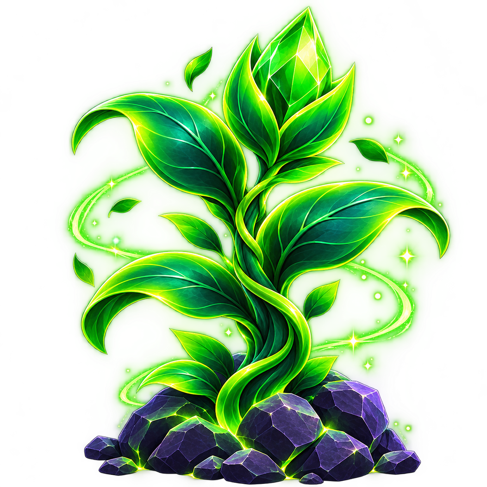

Continue de onde parou
Você ainda não começou nenhuma trilha
Escolha uma trilha e comece a aprender. O seu progresso aparece aqui.
Começar uma nova trilhaDê o seu próximo passo na sua vida financeira!
Continue de onde parou
Escolha uma trilha e comece a aprender. O seu progresso aparece aqui.
Começar uma nova trilhaEscolha por onde continuar a sua jornada.

Aprenda a cuidar do seu dinheiro desde o início, com conceitos simples e exercícios gameficados.
Registre o seu histórico de gastos e conquiste mais estabilidade financeira. Quanto mais organização, melhores serão as suas decisões.
Registrar GastosEle explica o conteúdo das trilhas na hora: juros, orçamento, inflação, dívidas, investimentos e muito mais.
O Nix é uma IA e pode errar. Ele não pesquisa na internet, não dá respostas de questões ou desafios e não dá conselhos de investimento nem de operações bancárias.